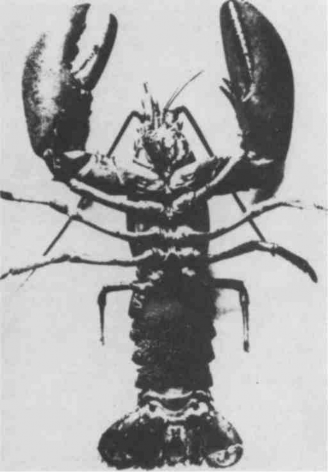

The same Professor Challenger who made the Earth scream with his pain machine, as described by Arthur Conan Doyle, gave a lecture after mixing several textbooks on geology and biology in a fashion befitting his simian disposition. He explained that the Earth — the Deterritorialized, the Glacial, the giant Molecule — is a body without organs. This body without organs is permeated by unformed, unstable matters, by flows in all directions, by free intensities or nomadic singularities, by mad or transitory particles. That, however, was not the question at hand. For there simultaneously occurs upon the earth a very important, inevitable phenomenon that is beneficial in many respects and unfortunate in many others: stratification. Strata are Layers, Belts. They consist of giving form to matters, of imprisoning intensities or locking singularities into systems of resonance and redundancy, of producing upon the body of the earth molecules large and small and organizing them into molar aggregates. Strata are acts of capture, they are like “black holes” or occlusions striving to seize whatever comes within their reach.1 They operate by coding and territorialization upon the earth; they proceed simultaneously by code and by territoriality. The strata are judgments of God; stratification in general is the entire system of the judgment of God (but the earth, or the body without organs, constantly eludes that judgment, flees and becomes destratified, decoded, deterritorialized).
Challenger quoted a sentence he said he came across in a geology textbook. He said we needed to learn it by heart because we would only be in a position to understand it later on: “A surface of stratification is a more compact plane of consistency lying between two layers.” The layers are the strata. They come at least in pairs, one serving as substratum for the other. The surface of stratification is a machinic assemblage distinct from the strata. The assemblage is between two layers, between two strata; on one side it faces the strata (in this direction, the assemblage is an interstratum), but the other side faces something else, the body without organs or plane of consistency (here, it is a metastratum). In effect, the body without organs is itself the plane of consistency, which becomes compact or thickens at the level of the strata.
God is a Lobster, or a double pincer, a double bind. Not only do strata come at least in pairs, but in a different way each stratum is double (it itself has several layers). Each stratum exhibits phenomena constitutive of double articulation. Articulate twice, B-A, BA. This is not at all to say that the strata speak or are language based. Double articulation is so extremely variable that we cannot begin with a general model, only a relatively simple case. The first articulation chooses or deducts, from unstable particle-flows, metastable molecular or quasi-molecular units (substances) upon which it imposes a statistical order of connections and successions (forms). The second articulation establishes functional, compact, stable structures (forms), and constructs the molar compounds in which these structures are simultaneously actualized (substances). In a geological stratum, for example, the first articulation is the process of “sedimentation,” which deposits units of cyclic sediment according to a statistical order: flysch, with its succession of sandstone and schist. The second articulation is the “folding” that sets up a stable functional structure and effects the passage from sediment to sedimentary rock.
It is clear that the distinction between the two articulations is not between substances and forms. Substances are nothing other than formed matters. Forms imply a code, modes of coding and decoding. Substances as formed matters refer to territorialities and degrees of territorialization and deterritorialization. But each articulation has a code and a territoriality; therefore each possesses both form and substance. For now, all we can say is that each articulation has a corresponding type of segmentarity or multiplicity: one type is supple, more molecular, and merely ordered; the other is more rigid, molar, and organized. Although the first articulation is not lacking in systematic interactions, it is in the second articulation in particular that phenomena constituting an overcoding are produced, phenomena of centering, unification, totalization, integration, hierarchization, and finalization. Both articulations establish binary relations between their respective segments. But between the segments of one articulation and the segments of the other there are biunivocal relationships obeying far more complex laws. The word “structure” may be used to designate the sum of these relations and relationships, but it is an illusion to believe that structure is the earth’s last word. Moreover, it cannot be taken for granted that the distinction between the two articulations is always that of the molecular and the molar.
He skipped over the immense diversity of the energetic, physico-chemical, and geological strata. He went straight to the organic strata, or the existence of a great organic stratification. The problem of the organism — how to “make” the body an organism — is once again a problem of articulation, of the articulatory relation. The Dogons, well known to the professor, formulate the problem as follows: an organism befalls the body of the smith, by virtue of a machine or machinic assemblage that stratifies it. “The shock of the hammer and the anvil broke his arms and legs at the elbows and knees, which until that moment he had not possessed. In this way, he received the articulations specific to the new human form that was to spread across the earth, a form dedicated to work…. His arm became folded with a view to work.”2 It is obviously only a manner of speaking to limit the articulatory relation to the bones. The entire organism must be considered in relation to a double articulation, and on different levels. 2 D 10,000 B.C.: THE GEOLOGY OF MORALS
First, on the level of morphogenesis: on the one hand, realities of the molecular type with aleatory relations are caught up in crowd phenomena or statistical aggregates determining an order (the protein fiber and its sequence or segmentarity); on the other hand, these aggregates themselves are taken up into stable structures that “elect” stereoscopic compounds, form organs, functions, and regulations, organize molar mechanisms, and even distribute centers capable of overflying crowds, overseeing mechanisms, utilizing and repairing tools, “overcoding” the aggregate (the folding back on itself of the fiber to form a compact structure; a second kind of segmentarity).3 Sedimentation and folding, fiber and infolding.
On a different level, the cellular chemistry presiding over the constitution of proteins also operates by double articulation. This double articulation is internal to the molecular, it is the articulation between small and large molecules, a segmentarity by successive modifications and polymerization. “First, the elements taken from the medium are combined through a series of transformations.…All this activity involves hundreds of chemical reactions. But ultimately, it produces a limited number of small compounds, a few dozen at most. In the second stage of cellular chemistry, the small molecules are assembled to produce larger ones. It is the polymerization of units linked end-to-end that forms the characteristic chains of mac-romolecules…. The two stages of cellular chemistry, therefore, differ in their function, products and nature. The first carves out chemical motifs; the second assembles them. The first forms compounds that exist only temporarily, for they are intermediaries on the path of biosynthesis; the second constructs stable products. The first operates by a series of different reactions; the second by repeating the same reaction.”4 There is, moreover, a third level, upon which cellular chemistry itself depends. It is the genetic code, which is in turn inseparable from a double segmentarity or a double articulation, this time between two types of independent molecules: the sequence of protein units and the sequence of nucleic units, with binary relations between units of the same type and biunivocal relationships between units of different types. Thus there are always two articulations, two segmentarities, two kinds of multiplicity, each of which brings into play both forms and substances. But the distribution of these two articulations is not constant, even within the same stratum.
The audience rather sulkily denounced the numerous misunderstandings, misinterpretations, and even misappropriations in the professor’s presentation, despite the authorities he had appealed to, calling them his “friends.” Even the Dogons … And things would presently get worse. The professor cynically congratulated himself on taking his pleasure from behind, but the offspring always turned out to be runts and wens, bits and pieces, if not stupid vulgarizations. Besides, the professor was not a geologist or a biologist, he was not even a linguist, ethnologist, or psychoanalyst; what his specialty had been was long since forgotten. In fact, Professor Challenger was double, articulated twice, and that did not make things any easier, people never knew which of him was present. He (?) claimed to have invented a discipline he referred to by various names: rhizomatics, stratoanalysis, schizoanalysis, nomadology, micropolitics, pragmatics, the science of multiplicities. Yet no one clearly understood what the goals, method, or principles of this discipline were. Young Professor Alasca, Challenger’s pet student, tried hypocritically to defend him by explaining that on a given stratum the passage from one articulation to the other was easily verified because it was always accompanied by a loss of water, in genetics as in geology, and even in linguistics, where the importance of the “lost saliva” phenomenon is measured. Challenger took offense, preferring to cite his friend, as he called him, the Danish Spinozist geologist, Hjelmslev, that dark prince descended from Hamlet who also made language his concern, precisely in order to analyze its “stratification.” Hjelmslev was able to weave a net out of the notions of matter, content and expression,form and substance. These were the strata, said Hjelmslev. Now this net had the advantage of breaking with the form-content duality, since there was a form of content no less than a form of expression. Hjelmslev’s enemies saw this merely as a way of rebaptizing the discredited notions of the signified and signifier, but something quite different was actually going on. Despite what Hjelmslev himself may have said, the net is not linguistic in scope or origin (the same must be said of double articulation: if language has a specificity of its own, as it most certainly does, that specificity consists neither in double articulation nor in Hjelmslev’s net, which are general characteristics of strata).
He used the term matter for the plane of consistency or Body without Organs, in other words, the unformed, unorganized, nonstratified, or destratified body and all its flows: subatomic and submolecular particles, pure intensities, prevital and prephysical free singularities. He used the term content for formed matters, which would now have to be considered from two points of view: substance, insofar as these matters are “chosen,” and form, insofar as they are chosen in a certain order (substance and form of content). He used the term expression for functional structures, which would also have to be considered from two points of view: the organization of their own specific form, and substances insofar as they form compounds (form and content of expression). A stratum always has a dimension of the expressible or of expression serving as the basis for a relative invariance; for example, nucleic sequences are inseparable from a relatively invariant expression by means of which they determine the compounds, organs, and functions of the organism.5 To express is always to sing the glory of God. Every stratum is a judgment of God; not only do plants and animals, orchids and wasps, sing or express themselves, but so do rocks and even rivers, every stratified thing on earth. The first articulation concerns content, the second expression. The distinction between the two articulations is not between forms and substances but between content and expression, expression having just as much substance as content and content just as much form as expression. The double articulation sometimes coincides with the molecular and the molar, and sometimes not; this is because content and expression are sometimes divided along those lines and sometimes along different lines. There is never correspondence or conformity between content and expression, only isomorphism with reciprocal presupposition. The distinction between content and expression is always real, in various ways, but it cannot be said that the terms preexist their double articulation. It is the double articulation that distributes them according to the line it draws in each stratum; it is what constitutes their real distinction. (On the other hand, there is no real distinction between form and substance, only a mental or modal distinction: since substances are nothing other than formed matters, formless substances are inconceivable, although it is possible in certain instances to conceive of substanceless forms.)
Even though there is a real distinction between them, content and expression are relative terms (“first” and “second” articulation should also be understood in an entirely relative fashion). Even though it is capable of invariance, expression is just as much a variable as content. Content and expression are two variables of a function of stratification. They not only vary from one stratum to another, but intermingle, and within the same stratum multiply and divide ad infinitum. Since every articulation is double, there is not an articulation of content and an articulation of expression — the articulation of content is double in its own right and constitutes a relative expression within content; the articulation of expression is also double and constitutes a relative content within expression. For this reason, there exist intermediate states between content and expression, expression and content: the levels, equilibriums, and exchanges through which a stratified system passes. In short, we find forms and substances of content that play the role of expression in relation to other forms and substances, and conversely for expression. These new distinctions do not, therefore, coincide with the distinction between forms and substances within each articulation; instead, they show that each articulation is already, or still, double. This can be seen on the organic stratum: proteins of content have two forms, one of which (the infolded fiber) plays the role of functional expression in relation to the other. The same goes for the nucleic acids of expression: double articulations cause certain formal and substantial elements to play the role of content in relation to others; not only does the half of the chain that is reproduced become a content, but the reconstituted chain itself becomes a content in relation to the “messenger.” There are double pincers everywhere on a stratum; everywhere and in all directions there are double binds and lobsters, a multiplicity of double articulations affecting both expression and content. Through all of this, Hjelmslev’s warning should not be forgotten: “The terms expression plane and content plane … are chosen in conformity with established notions and are quite arbitrary. Their functional definition provides no justification for calling one, and not the other, of these entities expression, or one, and not the other, content. They are defined only by their mutual solidarity, and neither of them can be identified otherwise. They are defined only oppositively and relatively, as mutually opposed functives of one and the same function.”6 We must combine all the resources of real distinction, reciprocal presupposition, and general relativism.
The question we must ask is what on a given stratum varies and what does not. What accounts for the unity and diversity of a stratum? Matter, the pure matter of the plane of consistency (or inconsistency) lies outside the strata. The molecular materials borrowed from the substrata may be the same throughout a stratum, but that does not mean that the molecules will be the same. The substantial elements may be the same throughout the stratum without the substances being the same. The formal relations or bonds may be the same without the forms being the same. In biochemistry, there is a unity of composition of the organic stratum defined at the level of materials and energy, substantial elements or radicals, bonds and reactions. But there is a variety of different molecules, substances, and forms.
Should we not sing the praise of Geoffroy Saint-Hilaire? For in the nineteenth century he developed a grandiose conception of stratification. He said that matter, considered from the standpoint of its greatest divisibility, consists in particles of decreasing size, flows or elastic fluids that “deploy themselves” by radiating through space. Combustion is the process of this escape or infinite division on the plane of consistency. Electrification is the opposite process, constitutive of strata; it is the process whereby similar particles group together to form atoms and molecules, similar molecules to form bigger molecules, and the biggest molecules to form molar aggregates: “the attraction of like by like,” as in a double pincer or double articulation. Thus there is no vital matter specific to the organic stratum, matter is the same on all the strata. But the organic stratum does have a specific unity of composition, a single abstract Animal, a single machine embedded in the stratum, and presents everywhere the same molecular materials, the same elements or anatomical components of organs, the same formal connections. Organic forms are nevertheless different from one another, as are organs, compound substances, and molecules. It is of little or no importance that Geoffroy chose anatomical elements as the substantial units rather than protein and nucleic acid radicals. At any rate, he already invoked a whole interplay of molecules. The important thing is the principle of the simultaneous unity and variety of the stratum: isomorphism of forms but no correspondence; identity of elements or components but no identity of compound substances.
This is where the dialogue, or rather violent debate, with Cuvier came in. To keep the last of the audience from leaving, Challenger imagined a particularly epistemological dialogue of the dead, in puppet theater style. Geoffroy called forth Monsters, Cuvier laid out all the Fossils in order, Baer flourished flasks filled with embryos, Vialleton put on a tetrapod’s belt, Perrier mimed the dramatic battle between the Mouth and the Brain, and so on. Geoffroy: The proof that there is isomorphism is that you can always get from one form on the organic stratum to another, however different they may be, by means of “folding.” To go from the Vertebrate to the Cephalopod, bring the two sides of the Vertebrate’s backbone together, bend its head down to its feet and its pelvis up to the nape of its neck … Cuvier (angrily): That’s just not true! You go from an Elephant to a Medusa; I know, I tried. There are irreducible axes, types, branches. There are resemblances between organs and analogies between forms, nothing more. You’re a falsifier, a metaphysician. Vialleton (a disciple of Cuvier and Baer): Even if folding gave good results, who could endure it? It’s not by chance that Geoffroy only considers anatomical elements. No muscle or ligament would survive it. Geoffroy. I said that there was isomorphism but not correspondence. You have to bring “degrees of development or perfection” into the picture. It is not everywhere on a stratum that materials reach the degree at which they form a given aggregate. Anatomical elements may be arrested or inhibited in certain places by molecular clashes, the influence of the milieu, or pressure from neighbors to such an extent that they compose different organs. The same formal relations or connections are then effectuated in entirely different forms and arrangements. It is still the same abstract Animal that is realized throughout the stratum, only to varying degrees, in varying modes. Each time, it is as perfect as its surroundings or milieu allows it to be (it is obviously not yet a question of evolution: neither folding nor degrees imply descent or derivation, only autonomous realizations of the same abstract relations). This is where Geoffroy invoked Monsters: human monsters are embryos that were retarded at a certain degree of development, the human in them is only a straitjacket for inhuman forms and substances. Yes, the Heteradelph is a crustacean. Baer (an ally of Cuvier and contemporary of Darwin, about whom he had reservations, in addition to being an enemy of Geoffroy): That’s not true, you can’t confuse degrees of development with types of forms. A single type has several degrees, a single degree is found in several types, but never will you make types out of degrees. An embryo of one type cannot display another type; at most, it can be of the same degree as an embryo of the second type. Vialleton (a disciple of Baer’s who took both Darwin and Geoffroy one further): And then there are things that only an embryo can do or endure. It can do or endure these things precisely because of its type, not because it can go from one type to another according to degrees of development. Admire the Tortoise. Its neck requires that a certain number of protovertebrae change position, and its front limbs must slide 180 degrees in relation to that of a bird. You can never draw conclusions about phylogenesis on the basis of embryogenesis. Folding does not make it possible to go from one type to another; quite the contrary, the types testify to the irreducibility of the forms of folding … (Thus Vialleton presented two kinds of interconnected arguments in the service of the same cause, saying first that there are things no animal can do by reason of its substance, and then that there are things that only an embryo can do by reason of its form. Two strong arguments.)7
We’re a little lost now. There is so much going on in these retorts. So many endlessly proliferating distinctions. So much getting even, for episte-mology is not innocent. The sweet and subtle Geoffroy and the violent and serious Cuvier do battle around Napoleon. Cuvier, the rigid specialist, is pitted against Geoffroy, always ready to switch specialities. Cuvier hates Geoffroy, he can’t stomach Geoffroy’s lighthearted formulas, his humor (yes, Hens do indeed have teeth, the Lobster has skin on its bones, etc.). Cuvier is a man of Power and Terrain, and he won’t let Geoffroy forget it; Geoffroy, on the other hand, prefigures the nomadic man of speed. Cuvier reflects a Euclidean space, whereas Geoffroy thinks topologically. Today let us invoke the folds of the cortex with all their paradoxes. Strata are topological, and Geoffroy is a great artist of the fold, a formidable artist; as such, he already has a presentiment of a certain kind of animal rhizome with aberrant paths of communication — Monsters. Cuvier reacts in terms of discontinuous photographs, and casts of fossils. But we’re a little lost, because distinctions have proliferated in all directions.
We have not even taken Darwin, evolutionism, or neoevolutionism into account yet. This, however, is where a decisive phenomenon occurs: our puppet theater becomes more and more nebulous, in other words, collective and differential. Earlier, we invoked two factors, and their uncertain relations, in order to explain the diversity within a stratum — degrees of development or perfection and types of forms. They now undergo a profound transformation. There is a double tendency for types of forms to be understood increasingly in terms of populations, packs and colonies, collectivities or multiplicities; and degrees of development in terms of speeds, rates, coefficients, and differential relations. A double deepening. This, Darwinism’s fundamental contribution, implies a new coupling of individuals and milieus on the stratum.8
First, if we assume the presence of an elementary or even molecular population in a given milieu, the forms do not preexist the population, they are more like statistical results. The more a population assumes divergent forms, the more its multiplicity divides into multiplicities of different nature, the more its elements form distinct compounds or matters — the more efficiently it distributes itself in the milieu, or divides up the milieu. Thus the relationship between embryogenesis and phylogenesis is reversed: the embryo does not testify to an absolute form preestablished in a closed milieu; rather, the phylogenesis of populations has at its disposal, in an open milieu, an entire range of relative forms to choose from, none of which is preestablished. In embryogenesis, “It is possible to tell from the parents, anticipating the outcome of the process, whether a pigeon or a wolf is developing…. But here the points of reference themselves are in motion: there are only fixed points for convenience of expression. At the level of universal evolution, it is impossible to discern that kind of reference point…. Life on earth appears as a sum of relatively independent species of flora and fauna with sometimes shifting or porous boundaries between them. Geographical areas can only harbor a sort of chaos, or, at best, extrinsic harmonies of an ecological order, temporary equilibriums between populations.”9
Second, simultaneously and under the same conditions, the degrees are not degrees of preexistent development or perfection but are instead global and relative equilibriums: they enter into play as a function of the advantage they give particular elements, then a particular multiplicity in the milieu, and as a function of a particular variation in the milieu. Degrees are no longer measured in terms of increasing perfection or a differentiation and increase in the complexity of the parts, but in terms of differential relations and coefficients such as selective pressure, catalytic action, speed of propagation, rate of growth, evolution, mutation, etc. Relative progress, then, can occur by formal and quantitative simplification rather than by complication, by a loss of components and syntheses rather than by acquisition (it is a question of speed, and speed is a differential). It is through populations that one is formed, assumes forms, and through loss that one progresses and picks up speed. Darwinism’s two fundamental contributions move in the direction of a science of multiplicities: the substitution of populations for types, and the substitution of rates or differential relations for degrees.10 These are nomadic contributions with shifting boundaries determined by populations or variations of multiplicities, and with differential coefficients or variations of relations. Contemporary biochemistry, or “molecular Darwinism” as Monod calls it, confirms, on the level of a single statistical and global individual, or a simple sample, the decisive importance of molecular populations and microbiological rates (for example, the endlessness of the sequence composing a chain, and the chance variation of a single segment in the sequence).
Challenger admitted having digressed at length but added that there was no possible way to distinguish between the digressive and the nondi-gressive. The point was to arrive at several conclusions concerning the unity and diversity of a single stratum, in this case the organic stratum.
To begin with, a stratum does indeed have a unity of composition, which is what allows it to be called a stratum: molecular materials, substantial elements, and formal relations or traits. Materials are not the same as the unformed matter of the plane of consistency; they are already stratified, and come from “substrata.” But of course substrata should not be thought of only as substrata: in particular, their organization is no less complex than, nor is it inferior to, that of the strata; we should be on our guard against any kind of ridiculous cosmic evolutionism. The materials furnished by a substratum are no doubt simpler than the compounds of a stratum, but their level of organization in the substratum is no lower than that of the stratum itself. The difference between materials and substantial elements is one of organization; there is a change in organization, not an augmentation. The materials furnished by the substratum constitute an exterior milieu for the elements and compounds of the stratum under consideration, but they are not exterior to the stratum. The elements and compounds constitute an interior of the stratum, just as the materials constitute an exterior of the stratum; both belong to the stratum, the latter because they are materials that have been furnished to the stratum and selected for it, the former because they are formed from the materials. Once again, this exterior and interior are relative; they exist only through their exchanges and therefore only by virtue of the stratum responsible for the relation between them. For example, on a crystalline stratum, the amorphous milieu, or medium, is exterior to the seed before the crystal has formed; the crystal forms by interiorizing and incorporating masses of amorphous material. Conversely, the interiority of the seed of the crystal must move out to the system’s exterior, where the amorphous medium can crystallize (the aptitude to switch over to the other form of organization). To the point that the seed itself comes from the outside. In short, both exterior and interior are interior to the stratum. The same applies to the organic stratum: the materials furnished by the substrata are an exterior medium constituting the famous prebiotic soup, and catalysts play the role of seed in the formation of interior substantial elements or even compounds. These elements and compounds both appropriate materials and exteriorize themselves through replication, even in the conditions of the primordial soup itself. Once again, interior and exterior exchange places, and both are interior to the organic stratum. The limit between them is the membrane that regulates the exchanges and transformation in organization (in other words, the distributions interior to the stratum) and that defines all of the stratum’s formal relations or traits (even though the situation and role of the limit vary widely depending on the stratum, for example, the limit of the crystal as compared to the cellular membrane). We may therefore use the term central layer, or central ring, for the following aggregate comprising the unity of composition of a stratum: exterior molecular materials, interior substantial elements, and the limit or membrane conveying the formal relations. There is a single abstract machine that is enveloped by the stratum and constitutes its unity. This is the Ecumenon, as opposed to the Planomenon of the plane of consistency.
It would be a mistake to believe that it is possible to isolate this unitary, central layer of the stratum, or to grasp it in itself, by regression. In the first place, a stratum necessarily goes from layer to layer, and from the very beginning. It already has several layers. It goes from a center to a periphery, at the same time as the periphery reacts back upon the center to form a new center in relation to a new periphery. Flows constantly radiate outward, then turn back. There is an outgrowth and multiplication of intermediate states, and this process is one of the local conditions of the central ring (different concentrations, variations that are tolerated below a certain threshold of identity). These intermediate states present new figures of milieus or materials, as well as of elements and compounds. They are intermediaries between the exterior milieu and the interior element, substantial elements and their compounds, compounds and substances, and between the different formed substances (substances of content and substances of expression). We will use the term epistrata for these intermediaries and superpositions, these outgrowths, these levels. Returning to our two examples, on the crystalline stratum there are many intermediaries between the exterior milieu or material and the interior seed: a multiplicity of perfectly discontinuous states of metastability constituting so many hierarchical degrees. Neither is the organic stratum separable from so-called interior milieus that are interior elements in relation to exterior materials but also exterior elements in relation to interior substances.” These internal organic milieus are known to regulate the degree of complexity or differentiation of the parts of an organism. A stratum, considered from the standpoint of its unity of composition, therefore exists only in its substantial epistrata, which shatter its continuity, fragment its ring, and break it down into gradations. The central ring does not exist independently of a periphery that forms a new center, reacts back upon the first center, and in turn gives forth discontinuous epistrata.
That is not all. In addition to this new or second-degree relativity of interior and exterior, there is a whole history on the level of the membrane or limit. To the extent that elements and compounds incorporate or appropriate materials, the corresponding organisms are forced to turn to other “more foreign and less convenient” materials that they take from still intact masses or other organisms. The milieu assumes a third figure here: it is no longer an interior or exterior milieu, even a relative one, nor an intermediate milieu, but instead an annexed or associated milieu. Associated milieus imply sources of energy different from alimentary materials. Before these sources are obtained, the organism can be said to nourish itself but not to breathe: it is in a state of suffocation.n Obtaining an energy source permits an increase in the number of materials that can be transformed into elements and compounds. The associated milieu is thus defined by the capture of energy sources (respiration in the most general sense), by the discernment of materials, the sensing of their presence or absence (perception), and by the fabrication or nonfabrication of the corresponding compounds (response, reaction). That there are molecular perceptions no less than molecular reactions can be seen in the economy of the cell and the property of regulatory agents to “recognize” only one or two kinds of chemicals in a very diverse milieu of exteriority. The development of the associated milieus culminates in the animal worlds described by von Uexkull, with all their active, perceptive, and energetic characteristics. The unforgettable associated world of the Tick, defined by its gravitational energy of falling, its olfactory characteristic of perceiving sweat, and its active characteristic of latching on: the tick climbs a branch and drops onto a passing mammal it has recognized by smell, then latches onto its skin (an associated world composed of three factors, and no more). Active and perceptive characteristics are themselves something of a double pincer, a double articulation.13
Here, the associated milieus are closely related to organic forms. An organic form is not a simple structure but a structuration, the constitution of an associated milieu. An animal milieu, such as the spider web, is no less “morphogenetic” than the form of the organism. One certainly cannot say that the milieu determines the form; but to complicate things, this does not make the relation between form and milieu any less decisive. Since the form depends on an autonomous code, it can only be constituted in an associated milieu that interlaces active, perceptive, and energetic characteristics in a complex fashion, in conformity with the code’s requirements; and the form can develop only through intermediary milieus that regulate the speeds and rates of its substances; and it can experience itself only in a milieu of exteriority that measures the comparative advantages of the associated milieus and the differential relations of the intermediary milieus. Milieus always act, through selection, on entire organisms, the forms of which depend on codes those milieus sanction indirectly. Associated milieus divide a single milieu of exteriority among themselves as a function of different forms, just as intermediate milieus divide a milieu of exteriority among themselves as a function of the rates or degrees of a single form. But the dividing is done differently in the two cases. In relation to the central belt of the stratum, the intermediate strata or milieus constitute “epistrata” piled one atop the other, and form new centers for the new peripheries. We will apply the term “parastrata” to the second way in which the central belt fragments into sides and “besides,” and the irreducible forms and milieus associated with them. This time, it is at the level of the limit or membrane of the central belt that the formal relations or traits common to all of the strata necessarily assume entirely different forms or types of forms corresponding to the parastrata. A stratum exists only in its epistrata and parastrata, so that in the final analysis these must be considered strata in their own right. The ideally continuous belt or ring of the stratum — the Ecumenon defined by the identity of molecular materials, substantial elements, and formal relations — exists only as shattered, fragmented into epistrata and parastrata that imply concrete machines and their respective indexes, and constitute different molecules, specific substances, and irreducible forms.14
We may now return to the two fundamental contributions of Darwinism and answer the question of why forms or types of forms in the parastrata must be understood in relation to populations, and degrees of development in the epistrata as rates or differential relations. First, parastrata envelop the very codes upon which the forms depend, and these codes necessarily apply to populations. There must already be an entire molecular population to be coded, and the effects of the code, or a change in the code, are evaluated in relation to a more or less molar population, depending on the code’s ability to propagate in the milieu or create for itself a new associated milieu within which the modification will be popularizable. Yes, we must always think in terms of packs and multiplicities: a code does or does not take hold because the coded individual belongs to a certain population, “the population inhabiting test tubes, a flask full of water, or a mammal’s intestine.” What does it mean to say that new forms and associated milieus potentially result from a change in the code, a modification of the code, or a variation in the parastratum? The change is obviously not due to a passage from one preestablished form to another, in other words, a translation from one code to another. As long as the problem was formulated in that fashion, it remained insoluble, and one would have to agree with Cuvier and Baer that established types of forms are irreducible and therefore do not admit of translation or transformation. But as soon as it is recognized that a code is inseparable from a process of decoding that is inherent to it, the problem receives a new formulation. There is no genetics without “genetic drift.” The modern theory of mutations has clearly demonstrated that a code, which necessarily relates to a population, has an essential margin of decoding: not only does every code have supplements capable of free variation, but a single segment may be copied twice, the second copy left free for variation. In addition, fragments of code may be transferred from the cells of one species to those of another, Man and Mouse, Monkey and Cat, by viruses or through other procedures. This involves not translation between codes (viruses are not translators) but a singular phenomenon we call surplus value of code, or side-communication.’5 We will have occasion to discuss this further, for it is essential to all becomings-animal. Every code is affected by a margin of decoding due to these supplements and surplus values — supplements in the order of a multiplicity, surplus values in the order of a rhizome. Forms in the parastrata, the parastrata themselves, far from lying immobile and frozen upon the strata, are part of a machinic interlock: they relate to populations, populations imply codes, and codes fundamentally include phenomena of relative decoding that are all the more usable, composable, and addable by virtue of being relative, always “beside.”
Forms relate to codes and processes of coding and decoding in the parastrata; substances, being formed matters, relate to territorialities and movements of deterritorialization and reterritorialization on the epis-trata. In truth, the epistrata are just as inseparable from the movements that constitute them as the parastrata are from their processes. Nomadic waves or flows of deterritorialization go from the central layer to the periphery, then from the new center to the new periphery, falling back to the old center and launching forth to the new.16 The organization of the epistrata moves in the direction of increasing deterritorialization. Physical particles and chemical substances cross thresholds of deterritorialization on their own stratum and between strata; these thresholds correspond to more or less stable intermediate states, to more or less transitory valences and existences, to engagements with this or that other body, to densities of proximity, to more or less localizable connections. Not only are physical particles characterized by speeds of deterritorialization — Joycean tachyons, particles-holes, and quarks recalling the fundamental idea of the “soup” — but a single chemical substance (sulfur or carbon, for example) has a number of more and less deterritorialized states. The more interior milieus an organism has on its own stratum, assuring its autonomy and bringing it into a set of aleatory relations with the exterior, the more deterritorialized it is. That is why degrees of development must be understood relatively, and as a function of differential speeds, relations, and rates. Deterritorialization must be thought of as a perfectly positive power that has degrees and thresholds (epistrata), is always relative, and has reterritorialization as its flipside or complement. An organism that is deterritorialized in relation to the exterior necessarily reterritorializes on its interior milieus. A given presumed fragment of embryo is deterritorialized when it changes thresholds or gradients, but is assigned a new role by the new surroundings. Local movements are alterations. Cellular migration, stretching, invagination, folding are examples of this. Every voyage is intensive, and occurs in relation to thresholds of intensity between which it evolves or that it crosses. One travels by intensity; displacements and spatial figures depend on intensive thresholds of nomadic deterritorialization (and thus on differential relations) that simultaneously define complementary, sedentary reterritorializations. Every stratum operates this way: by grasping in its pincers a maximum number of intensities or intensive particles over which it spreads its forms and substances, constituting determinate gradients and thresholds of resonance (deterritorialization on a stratum always occurs in relation to a complementary reterritorialization).17
As long as preestablished forms were compared to predetermined degrees, all one could do was affirm their irreducibility, and there was no way of judging possible communication between the two factors. But we see now that forms depend on codes in the parastrata and plunge into processes of decoding or drift and that degrees themselves are caught up in movements of intensive territorialization and reterritorialization. There is no simple correspondence between codes and territorialities on the one hand and decodings and deterritorialization on the other: on the contrary, a code may be a deterritorialization and a reterritorialization a decoding. Wide gaps separate code and territoriality. The two factors nevertheless have the same “subject” in a stratum: it is populations that are deterritorialized and reterritorialized, and also coded and decoded. In addition, these factors communicate or interlace in the milieus.
On the one hand, modifications of a code have an aleatory cause in the milieu of exteriority, and it is their effects on the interior milieus, their compatibility with them, that decide whether they will be popularized. Deterritorializations and reterritorializations do not bring about the modifications; they do, however, strictly determine their selection. On the other hand, every modification has an associated milieu that in turn entails a certain deterritorialization in relation to the milieu of exteriority and a certain reterritorialization on intermediate or interior milieus. Perceptions and actions in an associated milieu, even those on a molecular level, construct or produce territorial signs (indexes). This is especially true of an animal world, which is constituted, marked off by signs that divide it into zones (of shelter, hunting, neutrality, etc.), mobilize special organs, and correspond to fragments of code; this is so even at the margin of decoding inherent in the code. Even the domain of learning is defined by the code, or prescribed by it. But indexes or territorial signs are inseparable from a double movement. Since the associated milieu always confronts a milieu of exteriority with which the animal is engaged and in which it takes necessary risks, a line of flight must be preserved to enable the animal to regain its associated milieu when danger appears (for example, the bull’s line of flight in the arena, which it uses to regain the turf it has chosen).18 A second kind of line of flight arises when the associated milieu is rocked by blows from the exterior, forcing the animal to abandon it and strike up an association with new portions of exteriority, this time leaning on its interior milieus like fragile crutches. When the seas dried, the primitive Fish left its associated milieu to explore land, forced to “stand on its own legs,” now carrying water only on the inside, in the amniotic membranes protecting the embryo. In one way or the other, the animal is more a fleer than a fighter, but its flights are also conquests, creations. Territorialities, then, are shot through with lines of flight testifying to the presence within them of movements of deterritorialization and reterritorialization. In a certain sense, they are secondary. They would be nothing without these movements that deposit them. In short, the epistrata and parastrata are continually moving, sliding, shifting, and changing on the Ecumenon or unity of composition of a stratum; some are swept away by lines of flight and movements of deterritorialization, others by processes of decoding or drift, but they all communicate at the intersection of the milieus. The strata are continually being shaken by phenomena of cracking and rupture, either at the level of the substrata that furnish the materials (a prebiotic soup, a prechemical soup …), at the level of the accumulating epistrata, or at the level of the abutting parastrata: everywhere there arise simultaneous accelerations and blockages, comparative speeds, differences in deterritorialization creating relative fields of reterritorialization.
These relative movements should most assuredly not be confused with the possibility of absolute deterritorialization, an absolute line of flight, absolute drift. The former are stratic or interstratic, whereas the latter concern the plane of consistency and its destratification (its “combustion,” as Geoffroy would say). There is no doubt that mad physical particles crash through the strata as they accelerate, leaving minimal trace of their passage, escaping spatiotemporal and even existential coordinates as they tend toward a state of absolute deterritorialization, the state of unformed matter on the plane of consistency. In a certain sense, the acceleration of relative deterritorializations reaches the sound barrier: if the particles bounce off this wall, or allow themselves to be captured by black holes, they fall back onto the strata, into the strata’s relations and milieus; but if they cross the barrier they reach the unformed, destratified element of the plane of consistency. We may even say the the abstract machines that emit and combine particles have two very different modes of existence: the Ecumenon and the Planomenon. Either the abstract machines remain prisoner to stratifications, are enveloped in a certain specific stratum whose program or unity of composition they define (the abstract Animal, the abstract chemical Body, Energy in itself) and whose movements of relative deterritorialization they regulate, Or, on the contrary, the abstract machine cuts across all stratifications, develops alone and in its own right on the plane of consistency whose diagram it constitutes, the same machine at work in astrophysics and in microphysics, in the natural and in the artificial, piloting flows of absolute deterritorialization (in no sense, of course, is unformed matter chaos of any kind). But this presentation is still too simplified.
First, one does not go from the relative to the absolute simply by acceleration, even though increases in speed tend to have this comparative and global result. Absolute deterritorialization is not defined as a giant accelerator; its absoluteness does not hinge on how fast it goes. It is actually possible to reach the absolute by way of phenomena of relative slowness or delay. Retarded development is an example. What qualifies a deterritorialization is not its speed (some are very slow) but its nature, whether it constitutes epistrata and parastrata and proceeds by articulated segments or, on the contrary, jumps from one singularity to another following a nondecom-posable, nonsegmentary line drawing a metastratum of the plane of consistency. Second, under no circumstances must it be thought that absolute deterritorialization comes suddenly of afterward, is in excess or beyond. That would preclude any understanding of why the strata themselves are animated by movements of relative deterritorialization and decoding that are not like accidents occurring on them. In fact, what is primary is an absolute deterritorialization an absolute line of flight, however complex or multiple — that of the plane of consistency or body without organs (the Earth, the absolutely deterritorialized). This absolute deterritorialization becomes relative only after stratification occurs on that plane or body: It is the strata that are always residue, not the opposite. The question is not how something manages to leave the strata by how things get into them in the first place. There is a perpetual immanence of absolute deterritorialization within relative deterritorialization; and the machinic assemblages between strata that regulate the differential relations and relative movements also have cutting edges of deterritorialization oriented toward the absolute. The plane of consistency is always immanent to the strata; the two states of the abstract machine always coexist as two different states of intensities.
Most of the audience had left (the first to go were the Marinetians with their double articulation, followed by the Hjelmslevians with their content and expression, and the biologists with their proteins and nucleic acids). The only ones left were the mathematicians, accustomed to other follies, along with a few astrologers, archaeologists, and scattered individuals. Challenger, moreover, had changed since the beginning of his talk. His voice had become hoarser, broken occasionally by an apish cough. His dream was not so much to give a lecture to humans as to provide a program for pure computers. Or else he was dreaming of an axiomatic, for axi-omatics deals essentially with stratification. Challenger was addressing himself to memory only. Now that we had discussed what was constant and what varied in a stratum from the standpoint of substances and forms, the question remaining to be answered was what varied between strata from the standpoint of content and expression. For if it is true that there is always a real distinction constitutive of double articulation, a reciprocal presupposition of content and expression, then what varies from one stratum to another is the nature of this real distinction, and the nature and respective positions of the terms distinguished. Let us start with a certain group of strata that can be characterized summarily as follows: on these strata, content (form and substance) is molecular, and expression (form and substance) is molar. The difference between the two is primarily one of order of magnitude or scale. Resonance, or the communication occurring between the two independent orders, is what institutes the stratified system. The molecular content of that system has its own form corresponding to the distribution of elemental masses and the action of one molecule upon another; similarly, expression has a form manifesting the statistical aggregate and state of equilibrium existing on the macroscopic level. Expression is like an “operation of amplifying structuration carrying the active properties of the originally microphysical discontinuity to the macrophysical level.”
We took as our point of departure cases of this kind on the geological stratum, the crystalline stratum, and physicochemical strata, wherever the molar can be said to express microscopic molecular interactions (“the crystal is the macroscopic expression of a microscopic structure”; the “crystalline form expresses certain atomic or molecular characteristics of the constituent chemical categories”). Of course, this still leaves numerous possibilities, depending on the number and nature of the intermediate states, and also on the impact of exterior forces on the formation of expression. There may be a greater or lesser number of intermediate states between the molecular and the molar; there may be a greater or lesser number of exterior forces or organizing centers participating in the molar form. Doubtless, these two factors are in an inverse relation to each other and indicate limit-cases. For example, the molar form of expression may be of the “mold” type, mobilizing a maximum of exterior forces; or it may be of the “modulation” type, bringing into play only a minimum number of them. Even in the case of the mold, however, there are nearly instantaneous, interior intermediate states between the molecular content that assumes its own specific forms and the determinate molar expression of the outside by the form of the mold. Conversely, even when the multiplication and temporalization of the intermediate states testify to the endogenous character of the molar form (as with crystals), a minimum of exterior forces still intervene in each of the stages.19 We must therefore say that the relative independence of content and expression, the real distinction between molecular content and molar expression with their respective forms, has a special status enjoying a certain amount of latitude between the limit-cases.
Since strata are judgments of God, one should not hesitate to apply all the subtleties of medieval Scholasticism and theology. There is a real distinction between content and expression because the corresponding forms are effectively distinct in the “thing” itself, and not only in the mind of the observer. But this real distinction is quite special; it is only formal since the two forms compose or shape a single thing, a single stratified subject. Various examples of formal distinction can be cited: between scales or orders of magnitude (as between a map and its model; or, in a different fashion, between the microand macrophysical levels, as in the parable of Eddington’s two offices); between the various states or formal reasons through which a thing passes; between the thing in one form, and as affected by a possibly exterior causality giving it a different form; and so forth. (There is a proliferation of distinct forms because, in addition to content and expression each having its own forms, intermediate states introduce forms of expression proper to content and forms of content proper to expression.)
As diverse and real as formal distinctions are, on the organic stratum the very nature of the distinction changes. As a result, the entire distribution between content and expression is different. The organic stratum nevertheless preserves, and even amplifies, the relation between the molecular and the molar, with all kinds of intermediate states. We saw this in the case of morphogenesis, where double articulation is inseparable from a communication between two orders of magnitude. The same thing applies to cellular chemistry. But the organic stratum has a unique character that must account for the amplifications. In a preceding discussion, expression was dependent upon the expressed molecular content in all directions and in every dimension and had independence only to the extent that it appealed to a higher order of magnitude and to exterior forces: The real distinction was between forms, but forms belonging to the same aggregate, the same thing or subject. Now, however, expression becomes independent in its own right, in other words, autonomous. Before, the coding of a stratum was coextensive with that stratum; on the organic stratum, on the other hand, it takes place on an autonomous and independent line that detaches as much as possible from the second and third dimensions. Expression ceases to be voluminous or superficial, becoming linear, unidimensional (even in its segmentarity). The essential thing is the linearity of the nucleic sequence.20 The real distinction between content and expression, therefore, is not simply formal. It is strictly speaking real, and passes into the molecular, without regard to order of magnitude. It is between two classes of molecules, nucleic acids of expression and proteins of content, nucleic elements or nucleotides and protein elements or amino acids. Both expression and content are now molecular and molar. The distinction no longer concerns a single aggregate or subject; linearity takes us further in the direction of flat multiplicities, rather than unity. Expression involves nucleotides and nucleic acids as well as molecules that, in their substance and form, are entirely independent not only of molecules of content but of any directed action in the exterior milieu. Thus invariance is a characteristic of certain molecules and is not found exclusively on the molar scale. Conversely, proteins, in their substance and form of content, are equally independent of nucleotides: the only thing univocally determined is that one amino acid rather than another corresponds to a sequence of three nucleotides.2‘ What the linear form of expression determines is therefore a derivative form of expression, one that is relative to content and that, through a folding back upon itself of the protein sequence of the amino acids, finally yields the characteristic three-dimensional structures. In short, what is specific to the organic stratum is this alignment of expression, this exhaustion or detachment of a line of expression, this reduction of form and substance of expression to a unidimensional line, guaranteeing their reciprocal independence from content without having to account for orders of magnitude.
This has many consequences. The new configuration of expression and content conditions not only the organism’s power to reproduce but also its power to deterritorialize or accelerate deterritorialization. The alignment of the code or linearity of the nucleic sequence in fact marks a threshold of deterritorialization of the “sign” that gives it a new ability to be copied and makes the organism more deterritorialized than a crystal: only something deterritorialized is capable of reproducing itself. When content and expression are divided along the lines of the molecular and the molar, substances move from state to state, from the preceding state to the following state, or from layer to layer, from an already constituted layer to a layer in the process of forming, while forms install themselves at the limit between the last layer or last state and the exterior milieu. Thus the stratum develops into epistrata and parastrata; this is accomplished through a set of inductions from layer to layer and state to state, or at the limit. A crystal displays this process in its pure state, since its form expands in all directions, but always as a function of the surface layer of the substance, which can be emptied of most of its interior without interfering with the growth. It is the crystal’s subjugation to three-dimensionality, in other words its index of territoriality, that makes the structure incapable of formally reproducing and expressing itself; only the accessible surface can reproduce itself, since it is the only deterritorializable part. On the contrary, the detachment of a pure line of expression on the organic stratum makes it possible for the organism to attain a much higher threshold of deterritorialization, gives it a mechanism of reproduction covering all the details of its complex spatial structure, and enables it to put all of its interior layers “topologically in contact” with the exterior, or rather with the polarized limit (hence the special role of the living membrane). The development of the stratum into epistrata and parastrata occurs not through simple inductions but through transductions that account for the amplification of the resonance between the molecular and the molar, independently of order of magnitude; for the functional efficacy of the interior substances, independently of distance; and for the possibility of a proliferation and even interlacing of forms, independently of codes (surplus values of code or phenomena of transcoding or aparallel evolution).22
There is a third major grouping of strata, defined less by a human essence than, once again, by a new distribution of content and expression. Form of content becomes “alloplastic” rather than “homoplastic”; in other words, it brings about modifications in the external world. Form of expression becomes linguistic rather than genetic; in other words, it operates with symbols that are comprehensible, transmittable, and modifiable from outside. What some call the properties of human beings — technology and language, tool and symbol, free hand and supple larynx, “gesture and speech” — are in fact properties of this new distribution. It would be difficult to maintain that the emergence of human beings marked the absolute origin of this distribution. Leroi-Gourhan’s analyses give us an understanding of how contents came to be linked with the hand-tool couple and expressions with the face-language couple.23 In this context, the hand must not be thought of simply as an organ but instead as a coding (the digital code), a dynamic structuration, a dynamic formation (the manual form, or manual formal traits). The hand as a general form of content is extended in tools, which are themselves active forms implying substances, or formed matters; finally, products are formed matters, or substances, which in turn serve as tools. Whereas manual formal traits constitute the unity of composition of the stratum, the forms and substances of tools and products are organized into parastrata and epistrata that themselves function as veritable strata and mark discontinuities, breakages, communications and diffusions, nomadisms and sedentarities, multiple thresholds and speeds of relative deterritorialization in human populations. For with the hand as a formal trait or general form of content a major threshold of deterritorialization is reached and opens, an accelerator that in itself permits a shifting interplay of comparative deterritorializations and reterritorial-izations — what makes this acceleration possible is, precisely, phenomena of “retarded development” in the organic substrata. Not only is the hand a deterritorialized front paw; the hand thus freed is itself deterritorialized in relation to the grasping and locomotive hand of the monkey. The synergistic deterritorializations of other organs (for example, the foot) must be taken into account. So must correlative deterritorializations of the milieu: the steppe as an associated milieu more deterritorialized than the forest, exerting a selective pressure of deterritorialization upon the body and technology (it was on the steppe, not in the forest, that the hand was able to appear as a free form, and fire as a technologically formable matter). Finally, complementary reterritorializations must be taken into account (the foot as a compensatory reterritorialization for the hand, also occurring on the steppe). Maps should be made of these things, organic, ecological, and technological maps one can lay out on the plane of consistency.
On the other hand, language becomes the new form of expression, or rather the set of formal traits defining the new expression in operation throughout the stratum. Just as manual traits exist only in forms and formed matters that shatter their continuity and determine the distribution of their effects, formal traits of expression exist only in a diversity of formal languages and imply one or several formable substances. The substance involved is fundamentally vocal substance, which brings into play various organic elements: not only the larynx, but the mouth and lips, and the overall motricity of the face. Once again, a whole intensive map must be accounted for: the mouth as a deterritorialization of the snout (the whole “conflict between the mouth and the brain,” as Perrier called it); the lips as a deterritorialization of the mouth (only humans have lips, in other words, an outward curling of the interior mucous membranes; only human females have breasts, in other words, deterritorialized mammary glands: the extended nursing period advantageous for language learning is accompanied by a complementary reterritorialization of the lips on the breasts, and the breasts on the lips). What a curious deterritorialization, filling one’s mouth with words instead of food and noises. The steppe, once more, seems to have exerted strong pressures of selection: the “supple larynx” is a development corresponding to the free hand and could have arisen only in a deforested milieu where it is no longer necessary to have gigantic laryngeal sacks in order for one’s cries to be heard above the constant din of the forest. To articulate, to speak, is to speak softly. Everyone knows that lumberjacks rarely talk.24 Physiological, acoustic, and vocal substance are not the only things that undergo all these deterritorializations. The form of expression, as language, also crosses a threshold.
Vocal signs have temporal linearity, and it is this superlinearity that constitutes their specific deterritorialization and differentiates them from genetic linearity. Genetic linearity is above all spatial, even though its segments are constructed and reproduced in succession; thus at this level it does not require effective overcoding of any kind, only phenomena of end-to-end connection, local regulations, and partial interactions (overcoding takes place only at the level of integrations implying different orders of magnitude). That is why Jacob is reluctant to compare the genetic code to a language; in fact, the genetic code has neither emitter, receiver, comprehension, nor translation, only redundancies and surplus values.25 The temporal linearity of language expression relates not only to a succession but to a formal synthesis of succession in which time constitutes a process of linear overcoding and engenders a phenomenon unknown on the other strata: translation, translatability, as opposed to the previous inductions and transductions. Translation should not be understood simply as the ability of one language to “represent” in some way the givens of another language, but beyond that as the ability of language, with its own givens on its own stratum, to represent all the other strata and thus achieve a scientific conception of the world. The scientific world (Welt, as opposed to the Umwelt of the animal) is the translation of all of the flows, particles, codes, and territorialities of the other strata into a sufficiently deterritorialized system of signs, in other words, into an overcoding specific to language. This property of overcoding or superlinearity explains why, in language, not only is expression independent of content, but form of expression is independent of substance: translation is possible because the same form can pass from one substance to another, which is not the case for the genetic code, for example, between RNA and DNA chains. We will see later on how this situation gives rise to certain imperialist pretentions on behalf of language, which are naively expressed in such formulas as: “Every semiology of a nonlinguistic system must use the medium of language… .Language is the interpreter of all the other systems, linguistic and nonlinguistic.” This amounts to defining an abstract character of language and then saying that the other strata can share in that character only by being spoken in language. That is stating the obvious. More positively, it must be noted that the immanence within language of universal translation means that its epistrata and parastrata, with respect to superpositions, diffusions, communications, and abutments, operate in an entirely different manner than those of other strata: all human movements, even the most violent, imply translations.
We have to hurry, Challenger said, we’re being rushed by the line of time on this third stratum. So we have a new organization of content and expression, each with its own forms and substances: technological content, semiotic or symbolic expression. Content should be understood not simply as the hand and tools but as a technical social machine that preexists them and constitutes states of force or formations of power. Expression should be understood not simply as the face and language, or individual languages, but as a semiotic collective machine that preexists them and constitutes regimes of signs. A formation of power is much more than a tool; a regime of signs is much more than a language. Rather, they act as determining and selective agents, as much in the constitution of languages and tools as in their usages and mutual or respective diffusions and communications. The third stratum sees the emergence of Machines that are fully a part of that stratum but at the same time rear up and stretch their pincers out in all directions at all the other strata. Is this not like an intermediate state between the two states of the abstract Machine? — the state in which it remains enveloped in a corresponding stratum (ecumenon), and the state in which it develops in its own right on the destratified plane of consistency (planomenon). The abstract machine begins to unfold, to stand to full height, producing an illusion exceeding all strata, even though the machine itself still belongs to a determinate stratum. This is, obviously, the illusion constitutive of man (who does man think he is?). This illusion derives from the overcoding immanent to language itself. But what is not illusory are the new distributions between content and expression: technological content characterized by the hand-tool relation and, at a deeper level, tied to a social Machine and formations of power; symbolic expression characterized by face-language relations and, at a deeper level, tied to a semiotic Machine and regimes of signs. On both sides, the epistrata and parastrata, the superposed degrees and abutting forms, attain more than ever before the status of autonomous strata in their own right. In cases where we can discern two different regimes of signs or two different formations of power, we shall say that they are in fact two different strata in human populations. What precisely is the relation now between content and expression, and what type of distinction is there between them? It’s all in the head. Yet never was a distinction more real. What we are trying to say is that there is indeed one exterior milieu for the entire stratum, permeating the entire stratum: the cerebral-nervous milieu. It comes from the organic substratum, but of course that substratum does not merely play the role of a substratum or passive support. It is no less complex in organization. Rather, it constitutes the prehuman soup immersing us. Our hands and faces are immersed in it. The brain is a population, a set of tribes tending toward two poles. In Leroi-Gourhan’s analyses of the constitution of these two poles in the soup — one of which depends on the actions of the face, the other on the hand — their correlation or relativity does not preclude a real distinction between them; quite the contrary, it entails one, as the reciprocal presupposition of two articulations, the manual articulation of content and the facial articulation of expression. And the distinction is not simply real, as between molecules, things, or subjects; it has become essential (as they used to say in the Middle Ages), as between attributes, genres of being, or irreducible categories: things and words. Yet we find that the most general of movements, the one by which each of the distinct articulations is already double in its own right, carries over onto this level; certain formal elements of content play the role of expression in relation to content proper, and certain formal elements of expression play the role of content in relation to expression proper. In the first case, Leroi-Gourhan shows how the hand creates a whole world of symbols, a whole pluridimensional language, not to be confused with unilinear verbal language, which constitutes a radiating expression specific to content (he sees this as the origin of writing).26 The second case is clearly displayed in the double articulation specific to language itself, since phonemes form a radiating content specific to the expression of monemes as linear significant segments (it is only under these conditions that double articulation as a general characteristic of strata has the linguistic meaning Martinet attributes to it). Our discussion of the relations between content and expression, the real distinction between them, and the variations of those relations and that distinction on the major types of strata, is now provisionally complete.
Challenger wanted to go faster and faster. No one was left, but he went on anyway. The change in his voice, and in his appearance, was growing more and more pronounced. Something animalistic in him had begun to speak when he started talking about human beings. You still couldn’t put your finger on it, but Challenger seemed to be deterritorializing on the spot. He still had three problems he wanted to discuss. The first seemed primarily terminological: Under what circumstances may we speak of signs? Should we say they are everywhere on all the strata and that there is a sign whenever there is a form of expression? We may summarily distinguish three kinds of signs: indexes (territorial signs), symbols (deterritorialized signs), and icons (signs of reterritorialization). Should we say that there are signs on all the strata, under the pretext that every stratum includes territorialities and movements of deterritorialization and reterritorialization? This kind of expansive method is very dangerous, because it lays the groundwork for or reinforces the imperialism of language, if only by relying on its function as universal translator or interpreter. It is obvious that there is no system of signs common to all strata, not even in the form of a semiotic “chora” theoretically prior to symbolization.27 It would appear that we may accurately speak of signs only when there is a distinction between forms of expression and forms of content that is not only real but also categorical. Under these conditions, there is a semiotic system on the corresponding stratum because the abstract machine has precisely that fully erect posture that permits it to “write,” in other words, to treat language and extract a regime of signs from it. But before it reaches that point, in so-called natural codings, the abstract machine remains enveloped in the strata: It does not write in any way and has no margin of latitude allowing it to recognize something as a sign (except in the strictly territorial sense of animal signs). After that point, the abstract machine develops on the plane of consistency and no longer has any way of making a categorical distinction between signs and particles; for example, it writes, but flush with the real, it inscribes directly upon the plane of consistency. It therefore seems reasonable to reserve the word “sign” in the strict sense for the last group of strata. This terminological discussion would be entirely without interest if it did not bring us to yet another danger: not the imperialism of language affecting all of the strata, but the imperialism of the signifier affecting language itself, affecting all regimes of signs and the entire expanse of the strata upon which they are located. The question here is not whether there are signs on every stratum but whether all signs are signifiers, whether all signs are endowed with signifiance, whether the semiotic of signs is necessarily linked to a semiology of the signifier. Those who take this route may even be led to forgo the notion of the sign, for the primacy of the signifier over language guarantees the primacy of language over all of the strata even more effectively than the simple expansion of the sign in all directions. What we are saying is that the illusion specific to this posture of the abstract Machine, the illusion that one can grasp and shuffle all the strata between one’s pincers, can be better secured through the erection of the signifier than through the extension of the sign (thanks to signifiance, language can claim to be in direct contact with the strata without having to go through the supposed signs on each one). But we’re still going in the same circle, we’re still spreading the same canker. The linguistic relation between the signifier and signified has, of course, been conceived in many different ways. It has been said that they are arbitrary; that they are as necessary to each other as the two sides of the same leaf; that they correspond term by term, or else globally; and that they are so ambivalent as to be indistinguishable. In any event, the signified is thought not to exist outside of its relationship with signifier, and the ultimate signified is the very existence of the signifier, extrapolated beyond the sign. There is only one thing that can be said about the signifier: it is Redundancy, it is the Redundant. Hence its incredible despotism, and its success. Theories of arbitrariness, necessity, term-by-term or global correspondence, and ambivalence serve the same cause: the reduction of expression to the signifier. Yet forms of content and forms of expression are highly relative, always in a state of reciprocal presupposition. The relations between their respective segments are biunivocal, exterior, and “deformed.” There is never conformity between the two, or from one to the other. There is always real independence and a real distinction; even to fit the forms together, and to determine the relations between them, requires a specific, variable assemblage. None of these characteristics applies to the signifier-signified relation, even though some seem to coincide with it partially and accidentally. Overall, these characteristics stand in radical opposition to the scenario of the signifier. A form of content is not a signified, any more than a form of expression is a signifier.28 This is true for all the strata, including those on which language plays a role.
Signifier enthusiasts take an oversimplified situation as their implicit model: word and thing. From the word they extract the signifier, and from the thing a signified in conformity with the word, and therefore subjugated to the signifier. They operate in a sphere interior to and homogeneous with language. Let us follow Foucault in his exemplary analysis, which, though it seems not to be, is eminently concerned with linguistics. Take a thing like the prison: the prison is a form, the “prison-form”; it is a form of content on a stratum and is related to other forms of content (school, barracks, hospital, factory). This thing or form does not refer back to the word “prison” but to entirely different words and concepts, such as “delinquent” and “delinquency,” which express a new way of classifying, stating, translating, and even committing criminal acts. “Delinquency” is the form of expression in reciprocal presupposition with the form of content “prison.” Delinquency is in no way a signifier, even a juridical signifier, the signified of which would be the prison. That would flatten the entire analysis. Moreover, the form of expression is reducible not to words but to a set of statements arising in the social field considered as a stratum (that is what a regime of signs is). The form of content is reducible not to a thing but to a complex state of things as a formation of power (architecture, regimentation, etc.). We could say that there are two constantly intersecting multiplicities, “discursive multiplicities” of expression and “nondiscursive multiplicities” of content. It is even more complex than that because the prison as a form of content has a relative expression all its own; there are all kinds of statements specific to it that do not necessarily coincide with the statements of delinquency. Conversely, delinquency as a form of expression has an autonomous content all its own, since delinquency expresses not only a new way of evaluating crimes but a new way of committing them. Form of content and form of expression, prison and delinquency: each has its own history, microhistory, segments. At most, along with other contents and expressions, they imply a shared state of the abstract Machine acting not at all as a signifier but as a kind of diagram (a single abstract machine for the prison and the school and the barracks and the hospital and the factory
…). Fitting the two types of forms together, segments of content and segments of expression, requires a whole double-pincered, or rather double-headed, concrete assemblage taking their real distinction into account. It requires a whole organization articulating formations of power and regimes of signs, and operating on the molecular level (societies characterized by what Foucault calls disciplinary power).29 In short, we should never oppose words to things that supposedly correspond to them, nor signifiers to signifieds that are supposedly in conformity with them. What should be opposed are distinct formalizations, in a state of unstable equilibrium or reciprocal presupposition. “// is in vain that we say what we see; what we see never resides in what wesay.”i0 As in school: there is not just one writing lesson, that of the great redundant Signifier for any and all signifieds. There are two distinct formalizations in reciprocal presupposition and constituting a double-pincer: the formalization of expression in the reading and writing lesson (with its own relative contents), and the formalization of content in the lesson of things (with their own relative expressions). We are never signifier or signified. We are stratified.
The preferred method would be severely restrictive, as opposed to the expansive method that places signs on all strata or signifier in all signs (although at the limit it may forgo signs entirely). First, there exist forms of expression without signs (for example, the genetic code has nothing to do with a language). It is only under certain conditions that strata can be said to include signs; signs cannot be equated with language in general but are defined by regimes of statements that are so many real usages or functions of language. Then why retain the word sign for these regimes, which formalize an expression without designating or signifying the simultaneous contents, which are formalized in a different way? Signs are not signs of a thing; they are signs of deterritorialization and reterritorialization, they mark a certain threshold crossed in the course of these movements, and it is for this reason that the word should be retained (as we have seen, this applies even to animal “signs”).
Next, if we consider regimes of signs using this restrictive definition, we see that they are not, or not necessarily, signifiers. Just as signs designate only a certain formalization of expression in a determinate group of strata, signifiance itself designates only one specific regime among a number of regimes existing in that particular formalization. Just as there are ase-miotic expressions, or expressions without signs, there are asemiological regimes of signs, asignifying signs, both on the strata and on the plane of consistency. The most that can be said of signifiance is that it characterizes one regime, which is not even the most interesting or modern or contemporary one, but is perhaps only more pernicious, cancerous, and despotic than the others, and more steeped in illusion than they.
In any case, content and expression are never reducible to signified-signifier. And (this is the second problem) neither are they reducible to base-superstructure. One can no more posit a primacy of content as the determining factor than a primacy of expression as a signifying system. Expression can never be made into a form reflecting content, even if one endows it with a “certain” amount of independence and a certain potential for reacting, if only because so-called economic content already has a form and even forms of expression that are specific to it. Form of content and form of expression involve two parallel formalizations in presupposition: it is obvious that their segments constantly intertwine, embed themselves in one another; but this is accomplished by the abstract machine from which the two forms derive, and by machinic assemblages that regulate their relations. If this parallelism is replaced by a pyramidal image, then content (including its form) becomes an economic base of production displaying all of the characteristics of the Abstract; the assemblages become the first story of a superstructure that, as such, is necessarily situated within a State apparatus; the regimes of signs and forms of expression become the second story of the superstructure, defined by ideology. It isn’t altogether clear where language should go, since the great Despot decided that it should be reserved a special place, as the common good of the nation and the vehicle for information. Thus one misconstrues the nature of language, which exists only in heterogeneous regimes of signs, and rather than circulating information distributes contradictory orders. It misconstrues the nature of regimes of signs, which express organizations of power or assemblages and have nothing to do with ideology as the supposed expression of a content (ideology is a most execrable concept obscuring all of the effectively operating social machines). It misconstrues the nature of organizations of power, which are in no way located within a State apparatus but rather are everywhere, effecting formalizations of content and expression, the segments of which they intertwine. Finally, it misconstrues the nature of content, which is in no way economic “in the last instance,” since there are as many directly economic signs or expressions as there are noneconomic contents. Nor can the status of social formations be analyzed by throwing some signifier into the base, or vice versa, or a bit of phallus or castration into political economy, or a bit of economics or politics into psychoanalysis.
There is a third problem. It is difficult to elucidate the system of the strata without seeming to introduce a kind of cosmic or even spiritual evolution from one to the other, as if they were arranged in stages and ascended degrees of perfection. Nothing of the sort. The different figures of content and expression are not stages. There is no biosphere or noosphere, but everywhere the same Mechanosphere. If one begins by considering the strata in themselves, it cannot be said that one is less organized than another. This even applies to a stratum serving as a substratum: there is no fixed order, and one stratum can serve directly as a substratum for another without the intermediaries one would expect there to be from the standpoint of stages and degrees (for example, microphysical sectors can serve as an immediate substratum for organic phenomena). Or the apparent order can be reversed, with cultural or technical phenomena providing a fertile soil, a good soup, for the development of insects, bacteria, germs, or even particles. The industrial age defined as the age of insects … It’s even worse nowadays: you can’t even tell in advance which stratum is going to communicate with which other, or in what direction. Above all, there is no lesser, no higher or lower, organization; the substratum is an integral part of the stratum, is bound up with it as the milieu in which change occurs, and not an increase in organization.31 Furthermore, if we consider the plane of consistency we note that the most disparate of things and signs move upon it: a semiotic fragment rubs shoulders with a chemical interaction, an electron crashes into a language, a black hole captures a genetic message, a crystallization produces a passion, the wasp and the orchid cross a letter… There is no “like” here, we are not saying “like an electron,” “like an interaction,” etc. The plane of consistency is the abolition of all metaphor; all that consists is Real. These are electrons in person, veritable black holes, actual organites, authentic sign sequences. It’s just that they have been uprooted from their strata, destratified, decoded, deterritorialized, and that is what makes their proximity and interpenetration in the plane of consistency possible. A silent dance. The plane of consistency knows nothing of differences in level, orders of magnitude, or distances. It knows nothing of the difference between the artificial and the natural. It knows nothing of the distinction between contents and expressions, or that between forms and formed substances; these things exist only by means of and in relation to the strata.
But how can one still identify and name things if they have lost the strata that qualified them, if they have gone into absolute deterritorialization? Eyes are black holes, but what are black holes and eyes outside their strata and territorialities? What it comes down to is that we cannot content ourselves with a dualism or summary opposition between the strata and the destratified plane of consistency. The strata themselves are animated and defined by relative speeds of deterritorialization; moreover, absolute deterritorialization is there from the beginning, and the strata are spinoffs, thickenings on a plane of consistency that is everywhere, always primary and always immanent. In addition, the plane of consistency is occupied, drawn by the abstract Machine; the abstract Machine exists simultaneously developed on the destratified plane it draws, and enveloped in each stratum whose unity of composition it defines, and even half-erected in certain strata whose form of prehension it defines. That which races or dances upon the plane of consistency thus carries with it the aura of its stratum, an undulation, a memory or tension. The plane of consistency retains just enough of the strata to extract from them variables that operate in the plane of consistency as its own functions. The plane of consistency, or planomenon, is in no way an undifferentiated aggregate of unformed matters, but neither is it a chaos of formed matters of every kind. It is true that on the plane of consistency there are no longer forms or substances, content or expression, respective and relative deterritorializations. But beneath the forms and substances of the strata the plane of consistency (or the abstract machine) constructs continuums of intensity: it creates continuity for intensities that it extracts from distinct forms and substances. Beneath contents and expressions the plane of consistency (or the abstract machine) emits and combines particles-signs that set the most asignifying of signs to functioning in the most deterritorialized of particles. Beneath relative movements the plane of consistency (or the abstract machine) performs conjunctions of flows of deterritorialization that transform the respective indexes into absolute values. The only intensities known to the strata are discontinuous, bound up in forms and substances; the only particles are divided into particles of content and articles of expression; the only deterritorialized flows are disjointed and reterritorialized. Continuum of intensities, combined emission of particles or signs-particles, conjunction of deterritorialized flows: these are the three factors proper to the plane of consistency; they are brought about by the abstract machine and are constitutive of destratification. Now there is no hint in all of this of a chaotic white night or an undifferentiated black night. There are rules, rules of “plan(n)ing,” of diagramming, as we will see later on, or elsewhere. The abstract machine is not random; the continuities, emissions and combinations, and conjunctions do not occur in just any fashion.
A final distinction must now be noted. Not only does the abstract machine have different simultaneous states accounting for the complexity of what takes place on the plane of consistency, but the abstract machine should not be confused with what we call a concrete machinic assemblage. The abstract machine sometimes develops upon the plane of consistency, whose continuums, emissions, and conjugations it constructs, and sometimes remains enveloped in a stratum whose unity of composition and force of attraction or prehension it defines. The machinic assemblage is something entirely different from the abstract machine, even though it is very closely connected with it. First, on a stratum, it performs the coadaptations of content and expression, ensures biunivocal relationships between segments of content and segments of expression, and guides the division of the stratum into epistrata and parastrata. Next, between strata, it ensures the relation to whatever serves as a substratum and brings about the corresponding changes in organization. Finally, it is in touch with the plane of consistency because it necessarily effectuates the abstract machine on a particular stratum, between strata, and in the relation between the strata and the plane. An assemblage (for example, the smith’s anvil among the Dogons) is necessary for the articulations of the organic stratum to come about. An assemblage is necessary for the relation between two strata to come about. And an assemblage is necessary for organisms to be caught within and permeated by a social field that utilizes them: Must not the Amazons amputate a breast to adapt the organic stratum to a warlike technological stratum, as though at the behest of a fearsome woman-bow-steppe assemblage? Assemblages are necessary for states offeree and regimes of signs to intertwine their relations. Assemblages are necessary in order for the unity of composition enveloped in a stratum, the relations between a given stratum and the others, and the relation between these strata and the plane of consistency to be organized rather than random. In every respect, machinic assemblages effectuate the abstract machine insofar as it is developed on the plane of consistency or enveloped in a stratum. The most important problem of all: given a certain machinic assemblage, what is its relation of effectuation with the abstract machine? How does it effectuate it, with what adequation? Classify assemblages. What we call the mechanosphere is the set of all abstract machines and machinic assemblages outside the strata, on the strata, or between strata.
The system of the strata thus has nothing to do with signifier and signified, base and superstructure, mind and matter. All of these are ways of reducing the strata to a single stratum, or of closing the system in on itself by cutting it off from the plane of consistency as destratification. We had to summarize before we lost our voice. Challenger was finishing up. His voice had become unbearably shrill. He was suffocating. His hands were becoming elongated pincers that had become incapable of grasping anything but could still vaguely point to things. Some kind of matter seemed to be pouring out from the double mask, the two heads; it was impossible to tell whether it was getting thicker or more watery. Some of the audience had returned, but only shadows and prowlers. “You hear that? It’s an animal’s voice.” So the summary would have to be quick, the terminology would have to be set down as well as possible, for no good reason. There was a first group of notions: the Body without Organs or the destratified Plane of Consistency; the Matter of the Plane, that which occurs on the body or plane (singular, nonsegmented multiplicities composed of intensive continuums, emissions of particles-signs, conjunctions of flows); and the abstract Machine, or abstract Machines, insofar as they construct that body or draw that plane or “diagram” what occurs (lines of flight, or absolute deterritorializations).
Then there was the system of the strata. On the intensive continuum, the strata fashion forms and form matters into substances. In combined emissions, they make the distinction between expressions and contents, units of expression and units of content, for example, signs and particles. In conjunctions, they separate flows, assigning them relative movements and diverse territorialities, relative deterritorializations and complementary reterritorializations. Thus the strata set up everywhere double articulations animated by movements: forms and substances of content and forms and substances of expression constituting segmentary multiplicities with relations that are determinable in every case. Such are the strata. Each stratum is a double articulation of content and expression, both of which are really distinct and in a state of reciprocal presupposition. Content and expression intermingle, and it is two-headed machinic assemblages that place their segments in relation. What varies from stratum to stratum is the nature of the real distinction between content and expression, the nature of the substances as formed matters, and the nature of the relative movements. We may make a summary distinction between three major types of real distinction: the real-formal distinction between orders of magnitude, with the establishment of a resonance of expression (induction); the real-real distinction between different subjects, with the establishment of a linearity of expression (transduction); and the real-essential distinction between different attributes or categories, with the establishment of a superlinearity of expression (translation).
Each stratum serves as the substratum for another stratum. Each stratum has a unity of composition defined by its milieu, substantial elements, and formal traits (Ecumenon). But it divides into parastrata according to its irreducible forms and associated milieus, and into epistrata according to its layers of formed substances and intermediary milieus. Epistrata and parastrata must themselves be thought of as strata. A machinic assemblage is an interstratum insofar as it regulates the relations between strata, as well as the relations between contents and expressions on each stratum, in conformity with the preceding divisions. A single assemblage can borrow from different strata, and with a certain amount of apparent disorder; conversely, a stratum or element of a stratum can join others in functioning in a different assemblage. Finally, the machinic assemblage is a metastratum because it is also in touch with the plane of consistency and necessarily effectuates the abstract machine. The abstract machine exists enveloped in each stratum, whose Ecumenon or unity of composition it defines, and developed on the plane of consistency, whose destratification it performs (the Planomenon). Thus when the assemblages fit together the variables of a stratum as a function of its unity, they also bring about a specific effectuation of the abstract machine as it exists outside the strata. Machinic assemblages are simultaneously located at the intersection of the contents and expression on each stratum, and at the intersection of all of the strata with the plane of consistency. They rotate in all directions, like beacons.
It was over. Only later on would all of this take on concrete meaning. The double-articulated mask had come undone, and so had the gloves and the tunic, from which liquids escaped. As they streamed away they seemed to eat at the strata of the lecture hall, which was filled with fumes of olibanum and “hung with strangely figured arras.” Disarticulated, deterritorialized, Challenger muttered that he was taking the earth with him, that he was leaving for the mysterious world, his poison garden. He whispered something else: it is by headlong flight that things progress and signs proliferate. Panic is creation. A young woman cried out, her face “convulsed with a wilder, deeper, and more hideous epilepsy of stark panic than they had seen on human countenance before.” No one had heard the summary, and no one tried to keep Challenger from leaving. Challenger, or what remained of him, slowly hurried toward the plane of consistency, following a bizarre trajectory with nothing relative left about it. He tried to slip into an assemblage serving as a drum-gate, the particle Clock with its intensive clicking and conjugated rhythms hammering out the absolute: “The figure slumped oddly into a posture scarcely human, and began a curious, fascinated sort of shuffle toward the coffin-shaped clock The figure had now reached the abnormal clock, and the watchers saw through the dense fumes a blurred black claw fumbling with the tall, hieroglyphed door. The fumbling made a queer, clicking sound. Then the figure entered the coffin-shaped case and pulled the door shut after it…. The abnormal clicking went on, beating out the dark, cosmic rhythm which underlies all mystical gate-openings”32 — the Mechanosphere, or rhizosphere.